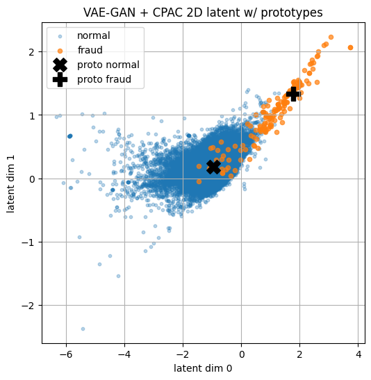
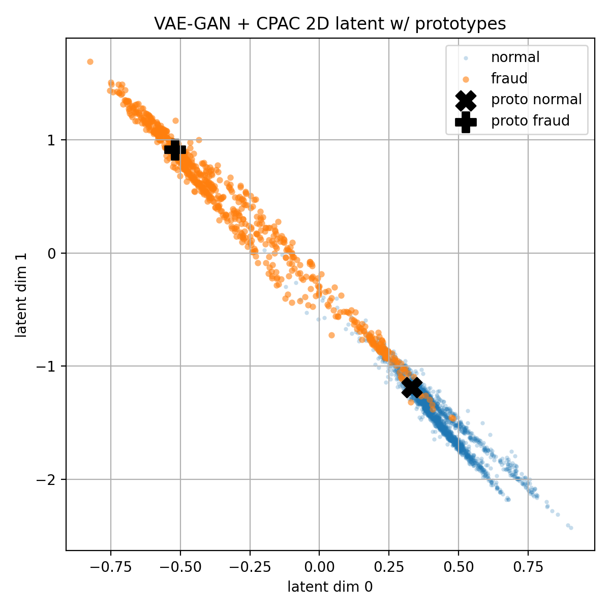

Extreme imbalance
The benchmark contains 284,807 transactions, but only 492 frauds, approximately 0.17% of the data.
A causal prototype attention approach to realistic synthetic oversampling.
Instead of treating fraud detection only as a minority-class augmentation problem, we use classifier-guided latent shaping to make the representation itself more discriminative and interpretable.
Credit-card fraud is extremely imbalanced. Classical oversampling can add minority examples without necessarily learning what separates fraudulent transactions from normal ones.
The benchmark contains 284,807 transactions, but only 492 frauds, approximately 0.17% of the data.
Minority-only generative training can concentrate synthetic samples in narrow latent regions and fail to model the relationship with the majority class.
Good-looking synthetic frauds can still encourage brittle or overconfident downstream classifiers when representation geometry remains weak.
The Causal Prototype Attention Classifier combines class prototypes with feature-wise attention, and is coupled to the VAE-GAN encoder so supervised feedback influences the representation learned from both classes.
Each representation is compared with learned prototypes for non-fraud and fraud. Attention weights determine which latent dimensions matter most for the distance calculation.

The core question is not only whether generated frauds look plausible, but whether the learned representation makes fraud and non-fraud easier to separate.
Traditional minority-only oversampling optimizes for plausible fraud samples. Our pipeline adds a discriminative objective: the shared encoder also learns from class labels across the full dataset.
This turns the classifier from a downstream consumer into a training signal that actively organizes the latent manifold.
With pre-training oversampling and VAE-GAN+CPAC, XGBoost reaches the paper's headline result on the held-out test set.

Main dataset: 2D latent-space view of VAE-GAN + CPAC with prototypes, showing the separation between normal and fraud samples in the learned representation.

Sparkov dataset: latent-space visualization with learned prototypes, showing a clean diagonal structure and strong class organization in the synthetic benchmark setting.
| Setup | Model | Precision | Recall | F1 | AUC-ROC |
|---|---|---|---|---|---|
| No oversampling | XGBoost | 95.44% | 90.81% | 93.00% | 98.14% |
| VAE-GAN+CPAC · 50 | XGBoost | 94.55% | 91.83% | 93.15% | 98.49% |
| Pre-training + VAE-GAN+CPAC · 100 | XGBoost | 94.67% | 92.85% | 93.74% | 98.47% |
The experiments show why minority-only augmentation should not be treated as the whole solution. Excessive oversampling can plateau or overfit, while synthetic samples that look plausible may still come from an insufficiently discriminative latent representation.
CPAC instead promotes class-aware latent structure through supervised feedback, prototypes and attention, combining augmentation with representation learning and interpretability.
The codebase is publicly available and the article is published in Knowledge-Based Systems, volume 350 (2026), article 116594.
@article{giusti2026fraud,
title = {Fraud is not just rarity: A causal prototype attention approach to realistic synthetic oversampling},
journal = {Knowledge-Based Systems},
volume = {350},
pages = {116594},
year = {2026},
issn = {0950-7051},
doi = {https://doi.org/10.1016/j.knosys.2026.116594},
author = {Claudio Giusti and Luca Guarnera and Mirko Casu and Sebastiano Battiato}
}